For example, take this painting Water Lilies by Claude Monet.
PIXLATE
A generative art project combining algorithms and fine arts to create organic, visually captivating patterns.
Play Animation
I have been trained in fine arts, and I’ve always wanted to combine my love for art with coding. This project is my way of exploring that intersection. I’ve always loved the organic beauty of oil painting—the way countless shades blend seamlessly into one another, creating depth and emotion. With this project, I aimed to recreate that effect through code, letting algorithms mimic the natural flow of colors and patterns, blending art and technology into something truly unique. So, you might think, "I never knew art could be coded!" Well, during my semester break last summer, I came across this video, which sparked the idea for this project. In addition, I read countless books on algorithmic/generative art and creative coding from my campus library which gave a boost to my learning.
What is Generative Art?
Generative art is a form of art that is created using algorithms, where the artist sets up a system or a set of rules, and the final piece is produced by this system or process, sometimes with the help of randomness. This art is often autonomous, meaning the system or algorithm runs on its own to create the artwork without the direct involvement of the artist in each step. The key characteristic of generative art is that the artist is not creating every detail by hand; instead, they are designing a process that generates the artwork. The artist typically defines the initial conditions, constraints, and sometimes inputs, and then the algorithm creates the output, which can vary from piece to piece based on random elements or parameters set by the artist.
Elements of Generative Art
- Algorithmic Systems:The artist writes code or designs a mathematical process that generates the art. This could involve equations, randomness, iterative processes, or other rule-based systems.
- Autonomy:Once the system is set up, the artwork can be generated automatically or interactively, with minimal human intervention.
- Variation:The outcome of generative art is often unpredictable, with different results each time the process is run. This allows for endless possibilities and unique creations.
- Mathematics and Logic: Many generative artists use mathematical concepts like fractals, randomness, geometry, and probability to create visually captivating designs.
How does it work?
The idea behind this process is to represent all possible colors within a color space, such as RGB, HSL, or others, in an organized and meaningful way. This is achieved by sorting and placing these colors on a canvas using algorithms. The placement of the colors is often based on certain mathematical principles, such as Euclidean distance in the chosen color space or the hue of the colors.
The Technical Side
In the algorithm, a seed point is initially chosen, and the placement of colors begins from that point and spreads outward, much like how a seed grows. The algorithm ensures that similar colors are grouped closely together. For example, colors with similar hues, such as orange and yellow, will naturally cluster together in the arrangement. This creates visually coherent and aesthetically pleasing patterns, where colors that are perceived as similar by the human eye are positioned near each other. The result is a seamless transition between colors and an intuitive way of understanding the relationships between them within the given color space
A nearest neighbor search is often employed to optimize the placement of colors by identifying the closest match in a 3D color space, such as RGB. Data structures like K-D trees are used to accelerate this process, allowing for quick retrieval of the most similar colors during placement. This ensures that the algorithm remains efficient even as the canvas size grows significantly.
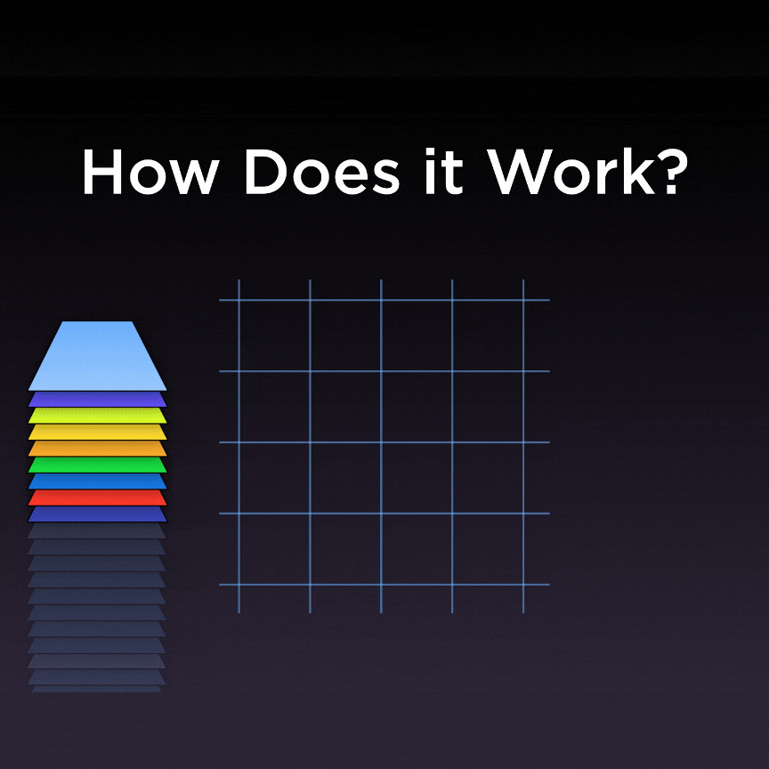
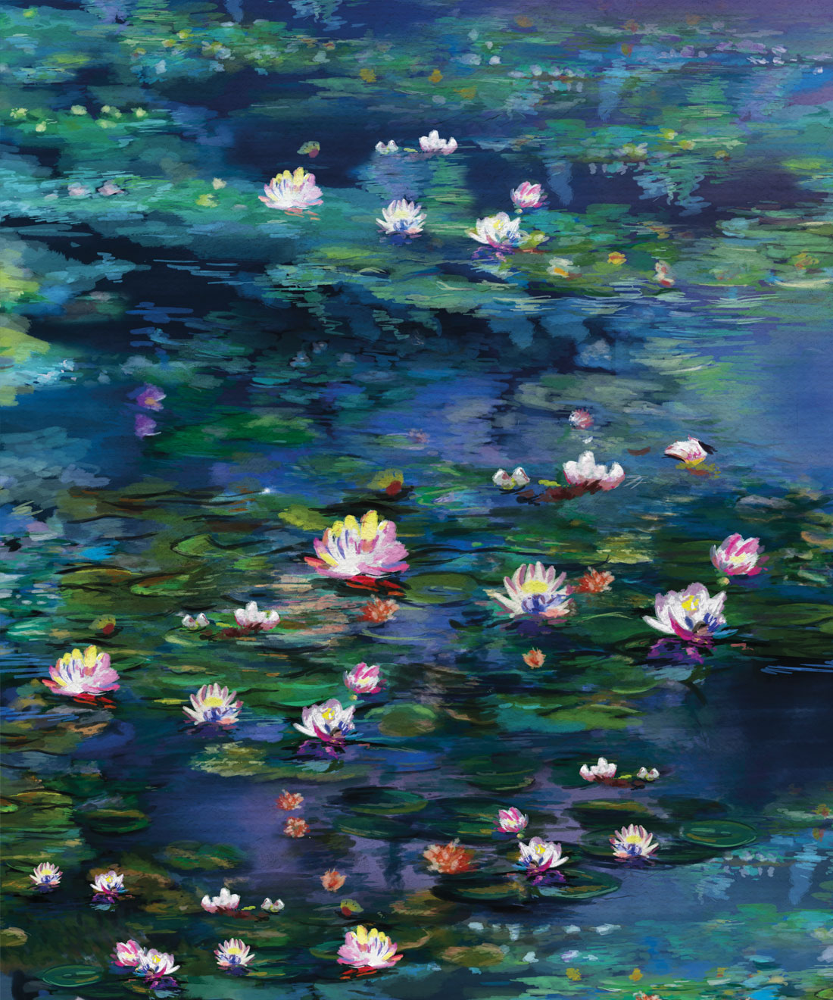
The colors that make up the painting can be arranged in different ways. My project involved an idea by which has to do with "growing" artwork like a crystal: start by placing a seed color on a blank canvas, and then grow outwards pixel by pixel with like attracting like:
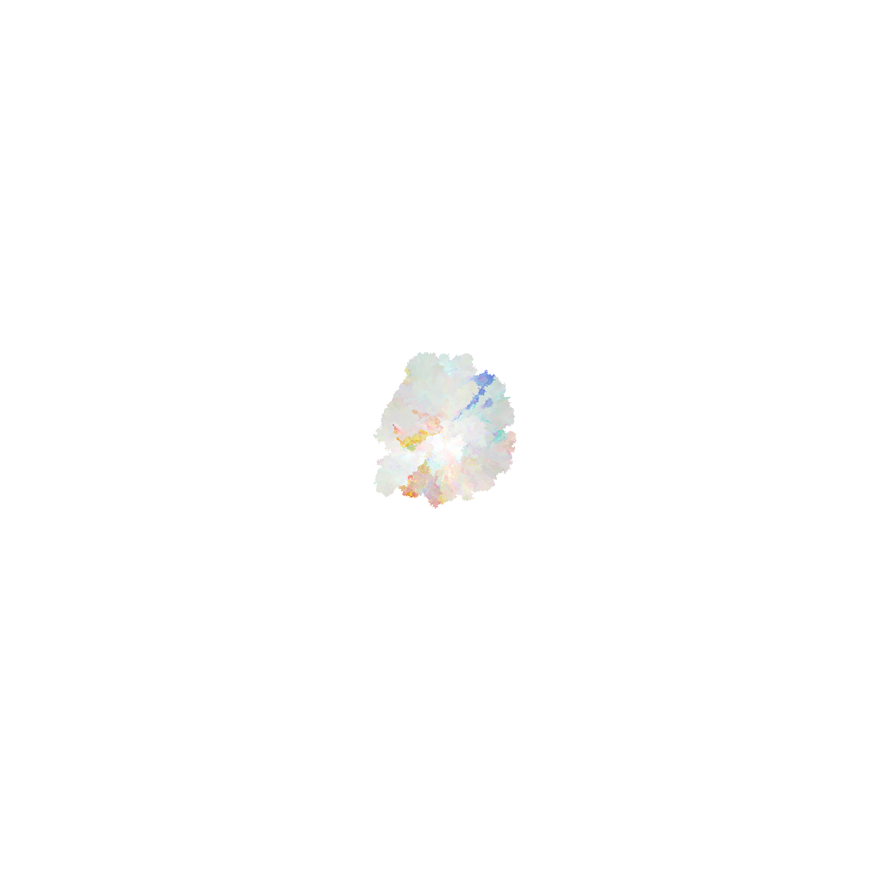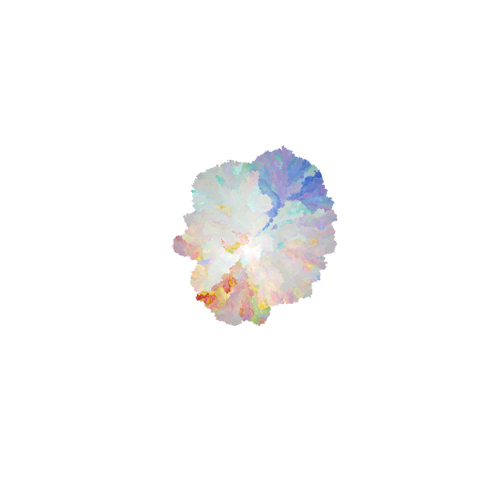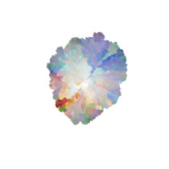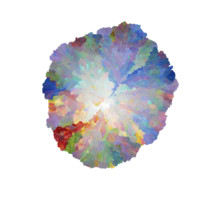
The colorful streaks are a result of the rules of the growth process and the order in which the colors are put down — similar colors tend to cluster together as they're being placed.
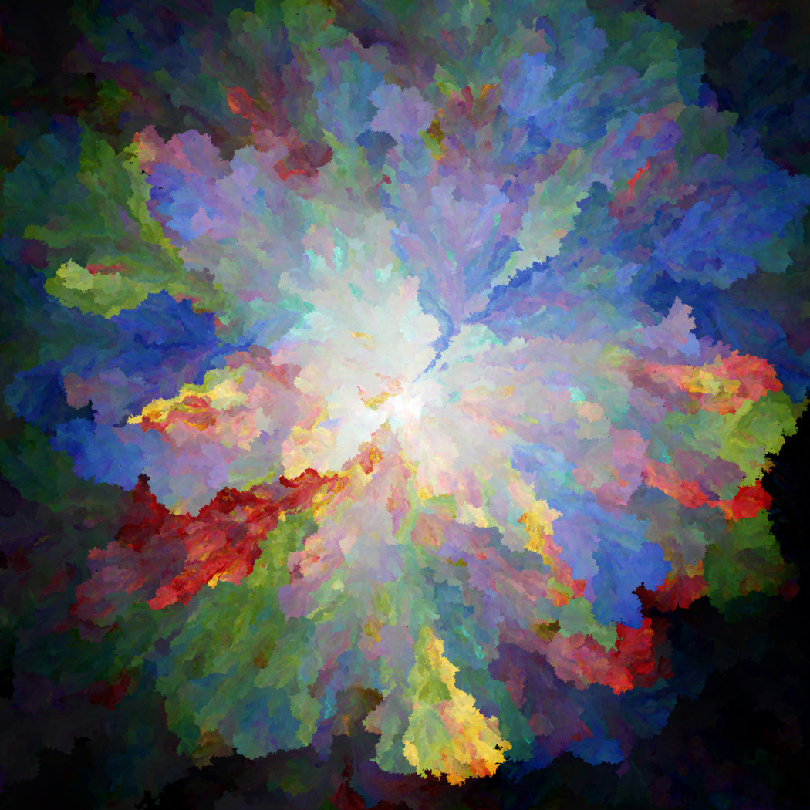
You can apply this idea in different ways to make different pictures. Varying the position and number of seed colors gives rise to different spreading patterns, while varying the order in which colors are placed causes different kinds of streaking patterns to appear. You can also play with the forces that cause colors to attract each other to create a more painterly look.
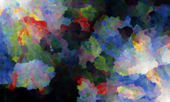
As before, but with two seed points placed in opposite corners of the canvas.
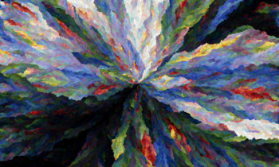
Colors shuffled randomly and placed via average selection.
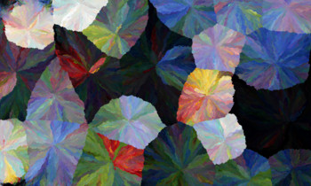
Seed points scattered across the canvas using poisson-disc sampling.
In tasks like rendering, clustering, or color organization, a significant number of pixels need to be processed to determine relationships, groupings, or proximity. Performing these operations in a naive, brute-force manner—such as comparing every pixel with all others—results in a computational bottleneck due to the 𝑂(n2) complexity.
Spatial Search
- Efficient Pixel Selection:Pixels on the canvas are not simply stored as an unstructured array but are organized in a data structure like a k-d tree, which partitions the pixel data based on spatial and color properties. This allows the algorithm to quickly find the closest matching pixel without iterating over the entire canvas.
- Color and Spatial Proximity:For every step of the artwork's growth, spatial search enables the algorithm to query pixels within a certain distance or matching certain color criteria. For example, when expanding outward, the algorithm can efficiently locate unfilled pixels that have a hue or tone similar to the seed pixel.
- Incremental Growth with Local Coherence:As the artwork grows outward pixel by pixel, spatial search ensures that neighboring pixels are evaluated first, preserving the natural and organic look of the expanding pattern. This mimics the way crystals grow or oil paint blends, creating an aesthetically pleasing result.
Using spatial search in this project enables the artwork to "grow" organically, with similar colors clustering naturally and patterns forming seamlessly. This approach not only enhances the visual quality of the generative art but also ensures computational efficiency, making it feasible to experiment with larger and more complex canvases
By integrating spatial search, the project bridges art and technology, showing how advanced algorithms can emulate the organic beauty of traditional art forms in a digital space.
Picking the Pieces
Now was the time to choose the source material. I toyed with the idea of using img that were personally meaningful, and experimented with lots of pieces from music albums and books.
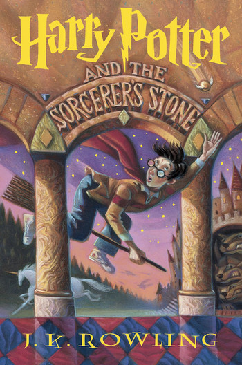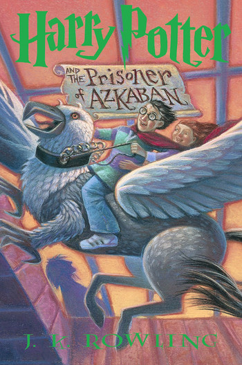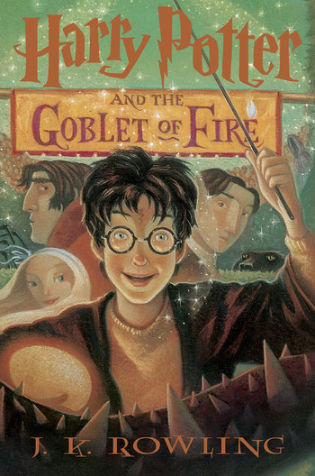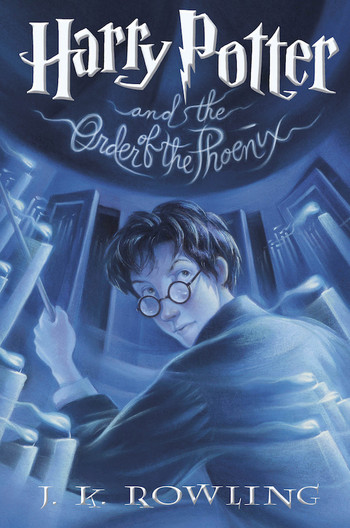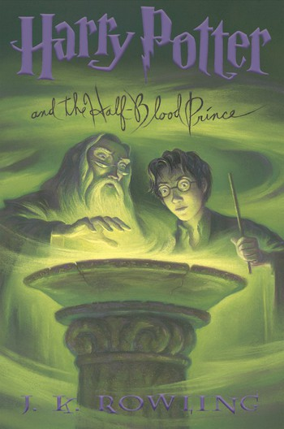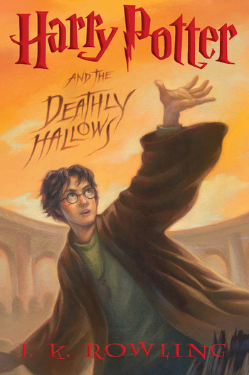
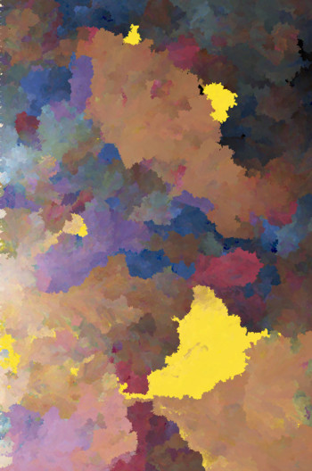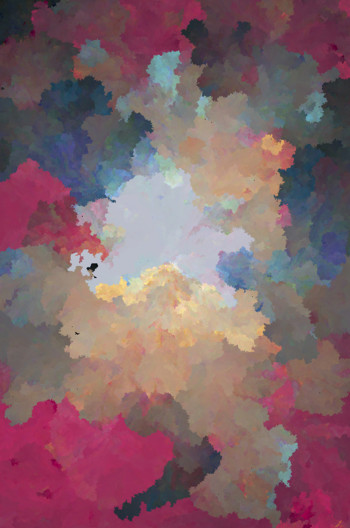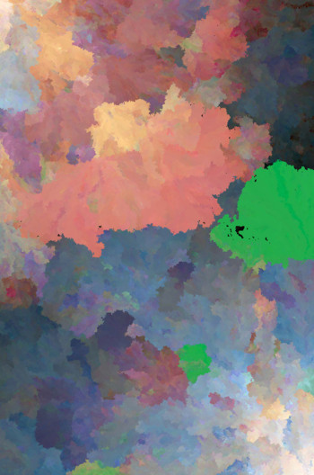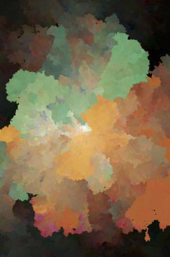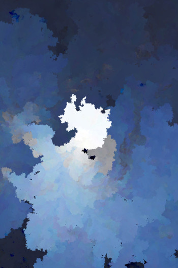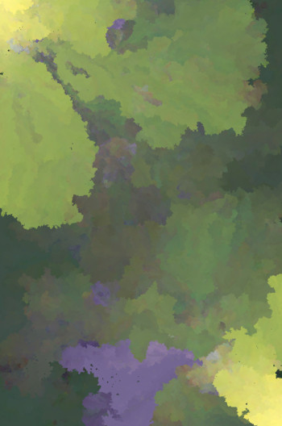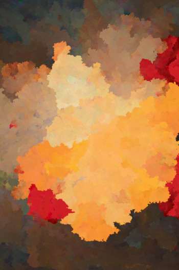
The Gallery
Click on each block of image and play to see it happen" to "Click on each image block to see it in action".
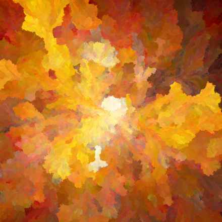
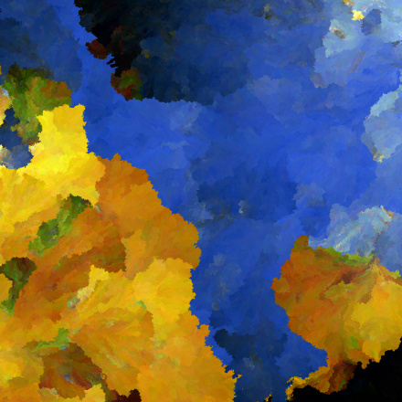
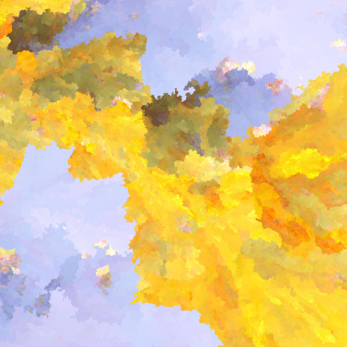
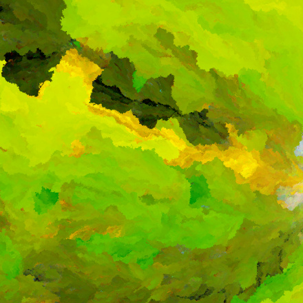
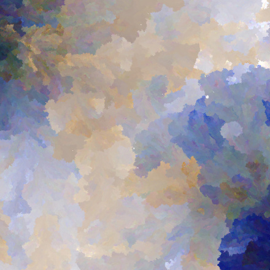
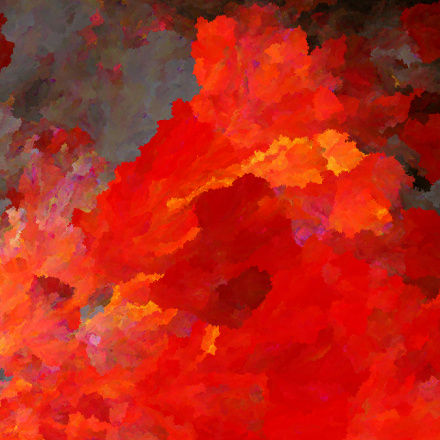
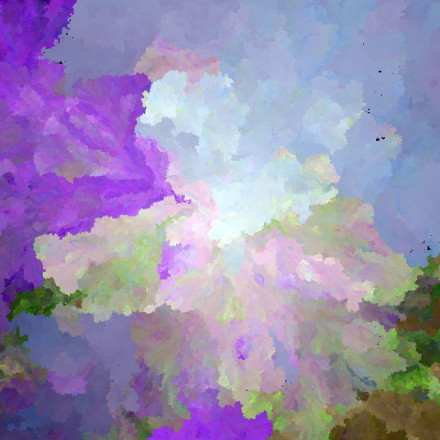
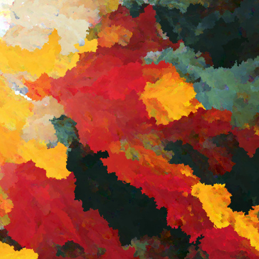
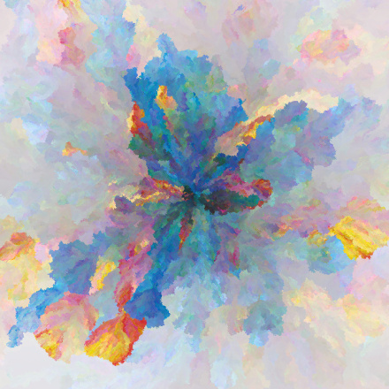
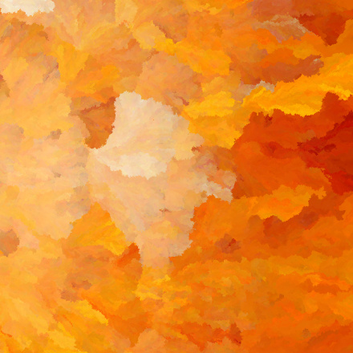
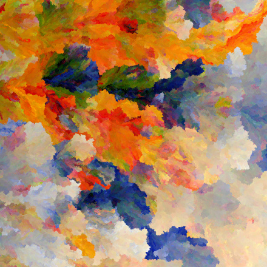
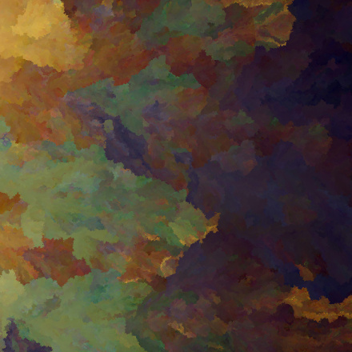

Play
Final Words
This project is a journey into the intersection of art and technology, where algorithms and creativity work hand in hand. By leveraging the power of code, we’ve explored how mathematical precision can create intricate, organic, and visually compelling patterns. It’s a reminder that art isn’t confined to traditional mediums—it can emerge from logic, data, and computation.
While this is just the beginning, the possibilities are limitless. With every experiment and iteration, we uncover new ways to blend art and science, continuing to blur the line between human expression and machine intelligence. Thank you for joining me on this exploration—I hope it inspires you to create, experiment, and imagine beyond boundaries.
Arnab Jena
Dec 2023